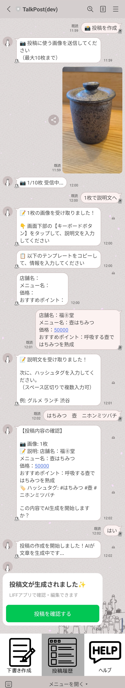
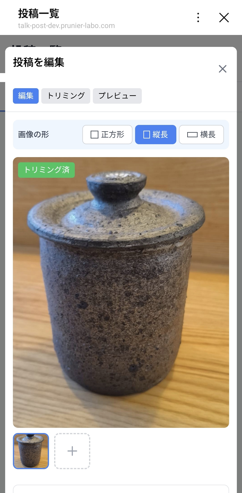
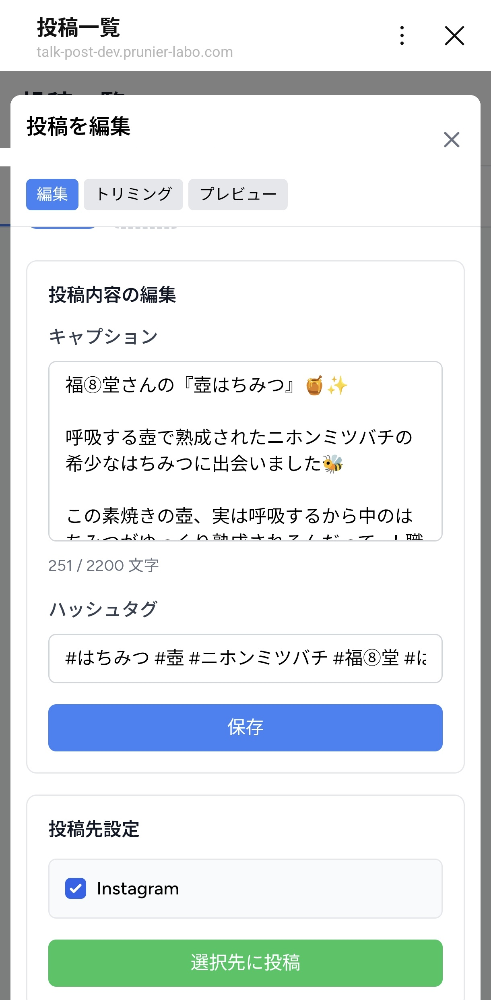
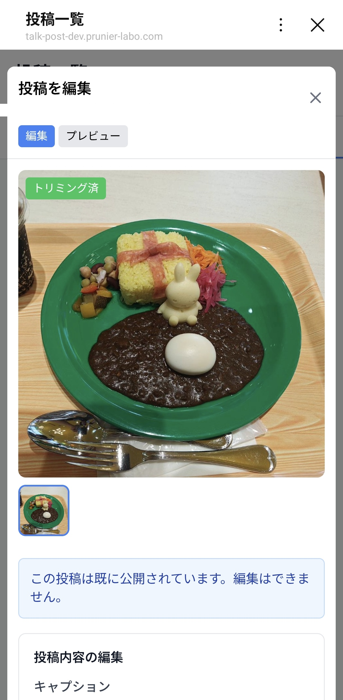

LINEで画像と一言を送るだけで、Claude APIがプロ品質のキャプション・ハッシュタグを生成しInstagramへ自動投稿。小規模店舗のSNS運用コストをゼロにする多店舗対応AI投稿支援システム。




LINE Webhookのタイムアウト制限（1秒）に対応するため、AI生成処理は非同期で実行しキュー経由で処理。Xserverなどキューワーカーが使えない環境ではCron+データベースキューで代替するデュアルモード設計にした。完了後はプッシュメッセージで結果を返す。
Instagram Graph APIの仕様上、投稿は「メディアオブジェクト作成→公開」の2ステップが必要。画像URLに一時的にアクセス可能なS3署名付きURLを使用し、Instagram側のメディア取得を担保している。
AIプロンプトはベース（全業種共通）→業種別（飲食・美容など）→店舗別（個店のトーン・NGワード）の3層で構成。店舗オーナーがWeb管理画面からプロンプトテンプレートを自由にカスタマイズでき、投稿文のブランドトーンを細かく制御できる。